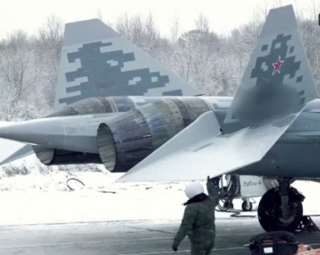

Nose Section & Radar
Equipped with the N036 Byelka AESA radar system, providing multi-band detection and allowing a dynamic search field infront of the nose and above and below the main mounting and reference point in this case the nose being the reference.
Trailing Edge Flaps
Enhance maneuverability and stability at high angles of attack.
Forward-Fuselage Sensors
Includes advanced IRST (Infrared Search and Track) for passive detection.
Canopy & Cockpit
Features an enhanced HUD and fully digital avionics suite.
Side Weapons Bays
Internally housed missiles reduce radar cross-section (p.s. Due to security concerns offical images of the side weapon bays are not available / classified this particular image is the side weapon bay of an F-22 raptor as it is speculated that the SU-57 has something similar ).
Main Weapons Bay
Capable of carrying long-range air-to-air and air-to-ground missiles.
Leading Edge Extensions
Improve lift and control authority in high-angle maneuvers.
Vertical Stabilizers
Canted twin-fin design for reduced radar signature.
Engine Nozzles
3D Thrust Vectoring nozzles for supermaneuverability and thrust control.
Electronic Warfare Systems

Integrated L402 Himalayas ECM suite for jamming and countermeasures (p.s Due to intel on the exact EWS systems the EWS system showed in the above picture is that of a MIG - 29 belonging to the IAF).